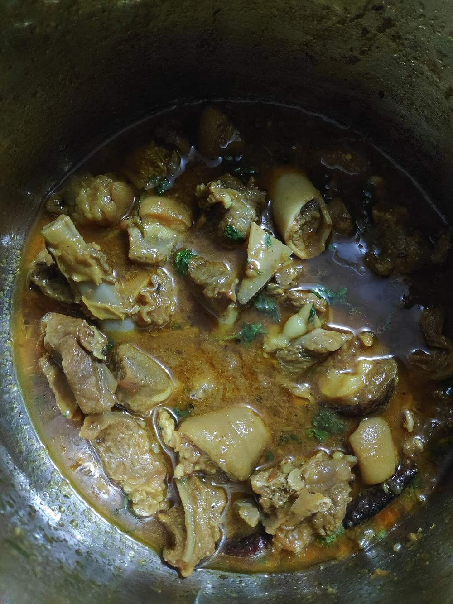

Contains: mustard
Checked against the ingredient list for ten allergens: milk, egg, fish, crustaceans, tree nuts, peanuts, sesame, mustard, soy and gluten. Brands vary, so read the label on anything new to you.
Ingredients
Quantities for 4.
- 600g, on the bone, cut into 4cm pieces Mutton
- 4 medium, peeled and halved Potatosmall waxy potatoes left whole are better still
- 2 medium, finely sliced Onion
- 5 cloves, crushed Garlic
- 4cm piece, finely julienned Ginger
- 5 tbsp Mustard Oil
- 2 tbsp Kashmiri Chilli
- 2 tsp Fennel Powder
- 1 tsp Dry Ginger Powder
- 1/2 tsp Turmeric
- 2, bruised Black Cardamom
- 4 Cloves
- 1 stick, 5cm Cinnamonoptional
- 3/4 tsp Garam Masalaoptional
- 2 tbsp, chopped Coriander Leavesfor the topoptional
- to taste Salt
- 800ml, hot Water
Cookware
stovetop, pressure cooker
Before you start
- Halve the potatoes and keep them in cold water until you fry them, or they will grey in the time it takes to brown the meat.
- Mix the Kashmiri chilli with 4 tbsp water to a loose paste before it goes in. Dry powder scorches in mustard oil and turns brown instead of red.
- Bring the mutton to room temperature for 20 minutes; straight from the fridge it seizes and takes longer to tenderise.
Method
- Heat the mustard oil to smoking point in a pressure cooker, then reduce the heat.
- Fry the drained potato halves until golden on the cut sides, about 6 minutes, and lift them out.Frying the potatoes first stops them disintegrating into the gravy later.
- Add the sliced onion and fry until deep gold, 10 to 12 minutes, stirring so the edges do not blacken.Deep gold, not brown. Burnt onion turns the whole pot bitter.
- Stir in the garlic and ginger and fry 2 minutes.
- Add the mutton with the black cardamom, cloves and cinnamon and brown over high heat for 8 minutes until the pieces have colour on every side.
- Lower the heat, add the chilli paste, fennel powder, dry ginger powder, turmeric and salt and fry until the oil separates, about 6 minutes.Wait for the oil to come to the surface as a red rim; that is the signal the masala is cooked.
- Pour in the hot water, close the cooker and cook for 4 whistles, then let the pressure fall on its own.
- Open, add the fried potatoes and simmer uncovered for 12 minutes until they are tender to a knife tip and the gravy has thickened slightly.
- Taste for salt, scatter over the garam masala and coriander leaves and take off the heat.The gravy should stay pourable. This is a thin curry meant to be eaten over rice.
Safe temperatures: Whole cuts of mutton, beef and pork are done at 63°C / 145°F, rested 3 minutes. A long braise passes that well before the meat is tender. Reheat leftovers to 74°C / 165°F. FoodSafety.gov
Storage
Keeps 3 days refrigerated. Reheat on the stovetop with a splash of water; the potatoes soak up gravy overnight, so loosen it before serving.
Nutrition Medium estimate
High protein: 36 g a serving, 29% of the calories
| Per serving411 g | Per 100 g | |
|---|---|---|
| Calories | 501 kcal | 122 kcal |
| Protein | 36.4 g | 9 g |
| Carbohydrate | 40.3 g | 10 g |
| of which sugars | 4.2 g | 1 g |
| Fibre | 7.3 g | 2 g |
| Fat | 22.1 g | 5 g |
| of which saturated | 3.3 g | 1 g |
| of which unsaturated | 16.7 g | 4 g |
Ingredients given to taste count as zero, so the real figures run a little higher. Nearest database match used for garam masala, mutton. Estimated from raw ingredients using USDA FoodData Central.
Times, yields, allergens and nutrition are guidance. Use your own judgement on doneness and on storing. More in About.